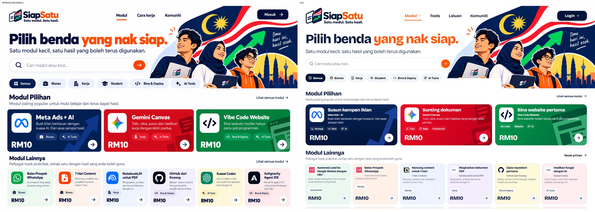
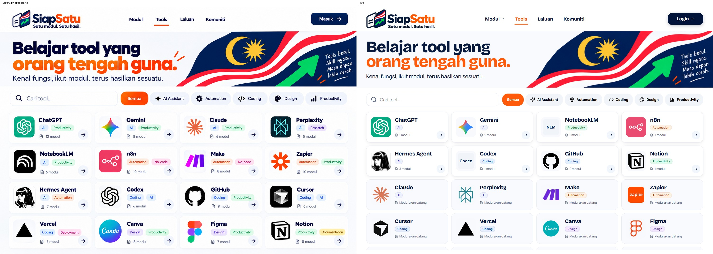
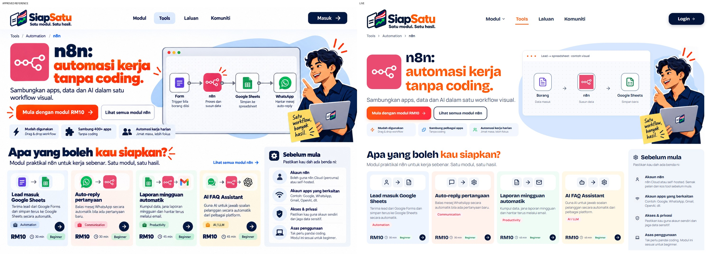
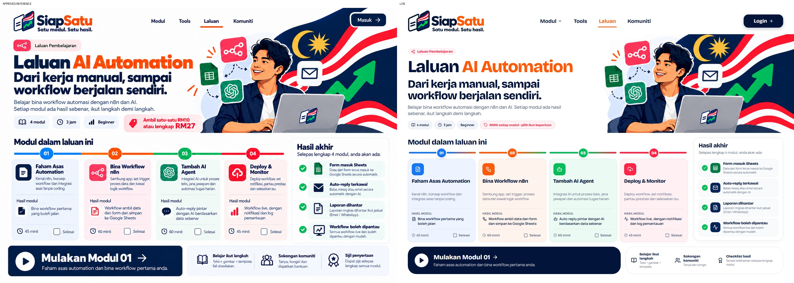
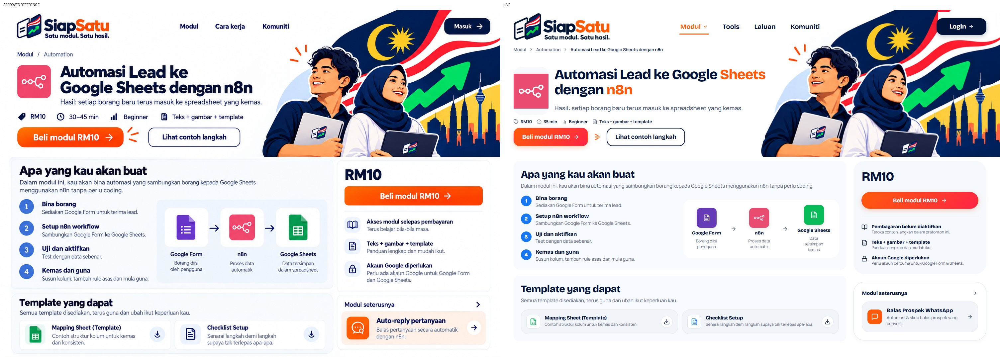
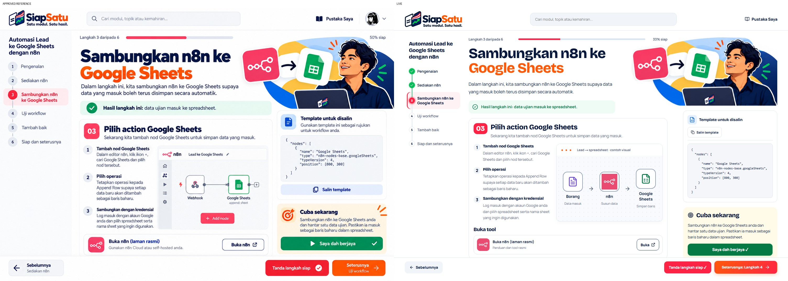
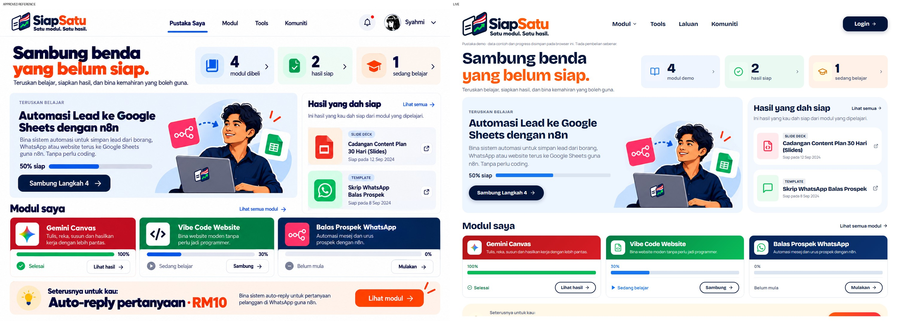
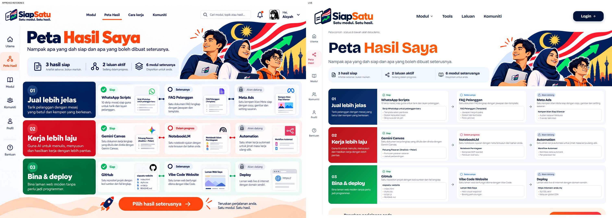
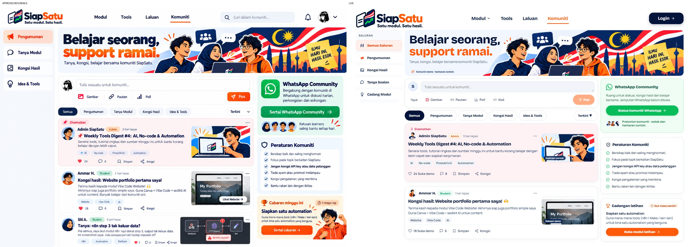

SiapSatu — all-page reference audit
11 reference-mapped pages. Login and generic Gemini module/reader checked for usability; no dedicated reference exists. Artwork is source-extracted; text, icons and demo data remain HTML.
home
50% overlay · Before / aftermodules
50% overlay · Before / after
tools
50% overlay · Before / after
tools-n8n
50% overlay · Before / after
tools-hermes-agent
50% overlay · Before / afterpaths-ai-automation
50% overlay · Before / after
modules-n8n-google-sheets
50% overlay · Before / after
learn-n8n-google-sheets-3
50% overlay · Before / after
library
50% overlay · Before / after
progress
50% overlay · Before / after
community
50% overlay · Before / after